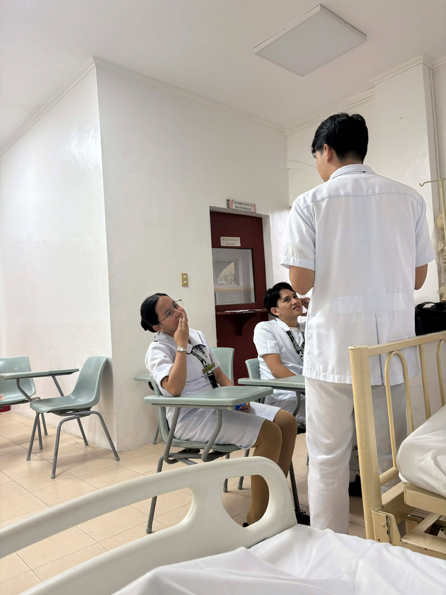
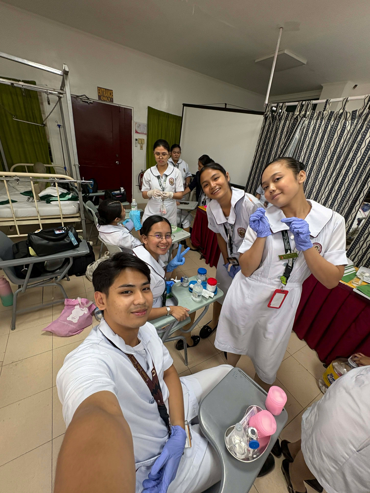
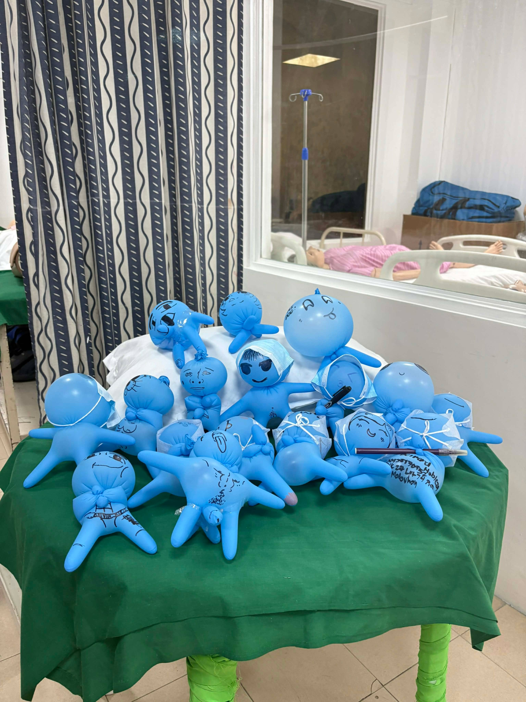
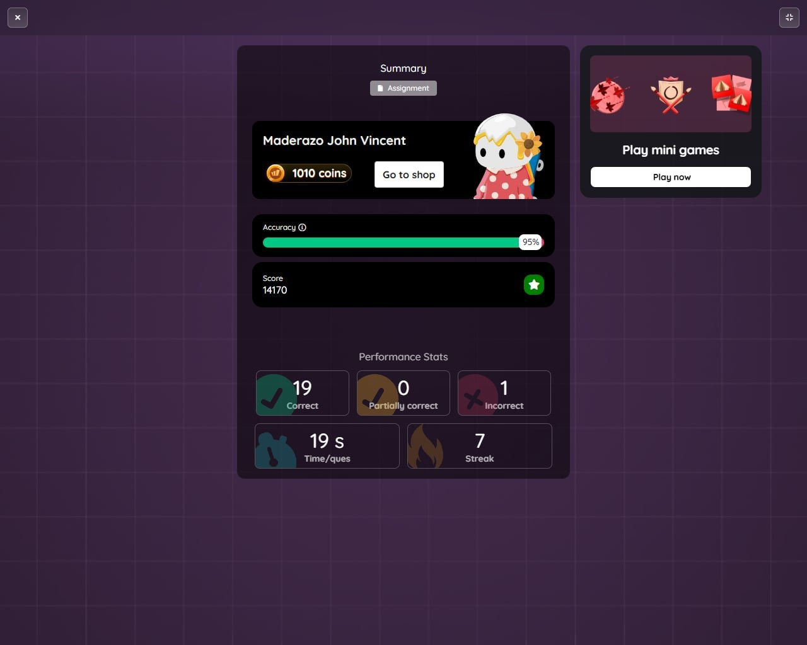
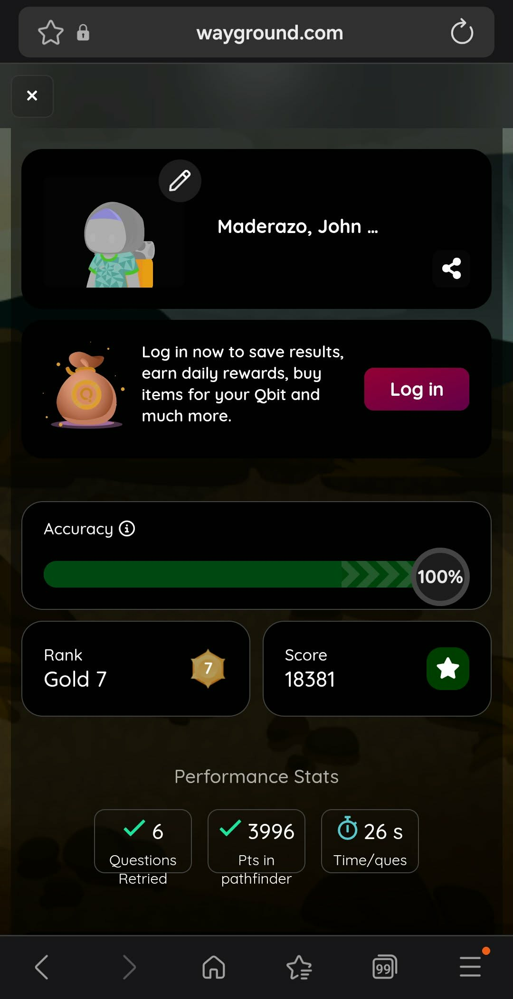
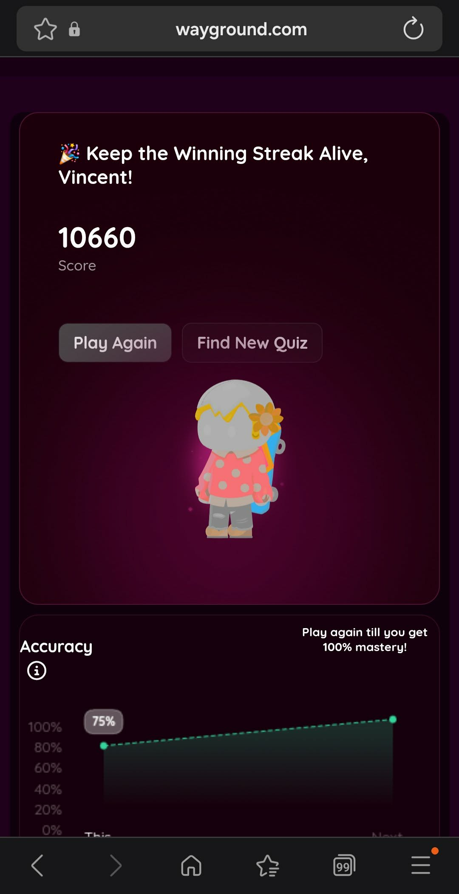
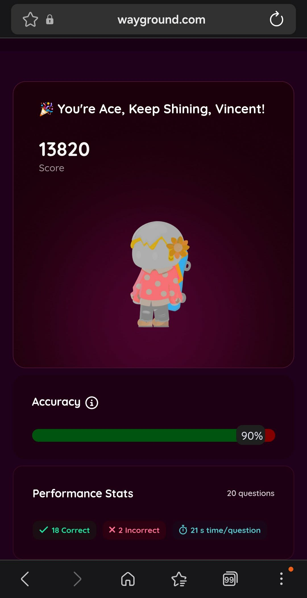
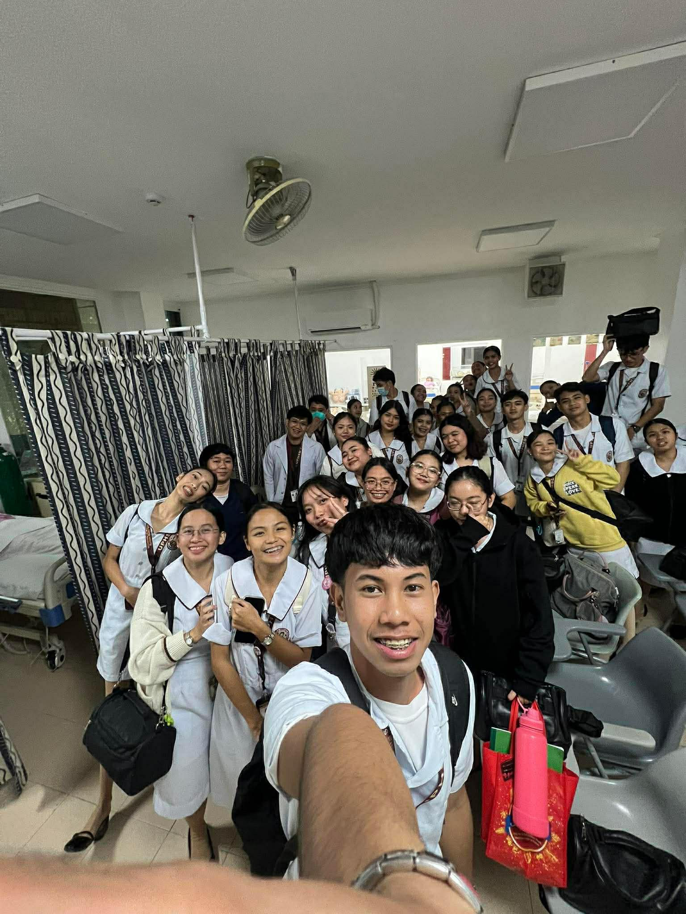
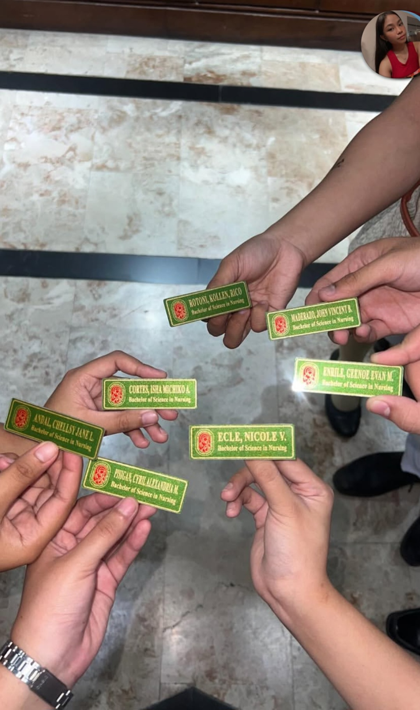

STS PROJECT
MY
E PORTFOLIO
IN Science Technology And Society

Presented by
John Vincent B. Maderazo
1st Year Nursing Student
University of Perpetual Help
Science Technology And Society
0%
MY
IN Science Technology And Society
Presented by
1st Year Nursing Student
University of Perpetual Help

I am John Vincent B. Maderazo, 18 years old and a first year nursing student in University of Perpetual Help. This is my project for Science Technology And Society.
My birthday is February 22, 2007. My favorite color is blue. My hobbies are playing badminton and I love to watch anime, movies and reading manga.

Through playing badminton I learned a lot and made new and loyal friends along the way.

My unexpected passion that led me through hardships and realizations. Modeling and Pageantry is one of my unexpected passion that i loved doing.

I choosed nursing for because when i was a little kid my father was always sick so i got a bit of an experience in the hospital. I was always there until i grew up my father when i was 18. Now he became my inpiration until today.
Dedicated to my father — the reason behind every lesson I learn and every step I take in this journey.
I have learned a lot from my teacher Ms. Kristel Mendoza about the different perspectives of science and technology.
To highlight my learning, the most exciting part of this subject is how i learned different apps for nursing students which later on helped me in my studies and researches.
"The most exciting part is learning apps that help in my nursing studies."



Is modern technology safe or dangerous?
Modern technology is neither completely safe nor entirely dangerous—it depends on how people use it. It becomes safe when used responsibly and ethically, but dangerous when misused.
Why is the information age important?
It allows fast access to knowledge and real-time communication. In nursing, it provides easy access to essential learning materials and training resources.
Significant experiences in STS?
Understanding that technology is not just about tools, but its impact on people, culture, and the environment. It prepared me to use technology wisely in my future career.




"Technology is just a tool. In terms of getting the kids working together and motivating them, the teacher is the most important."


